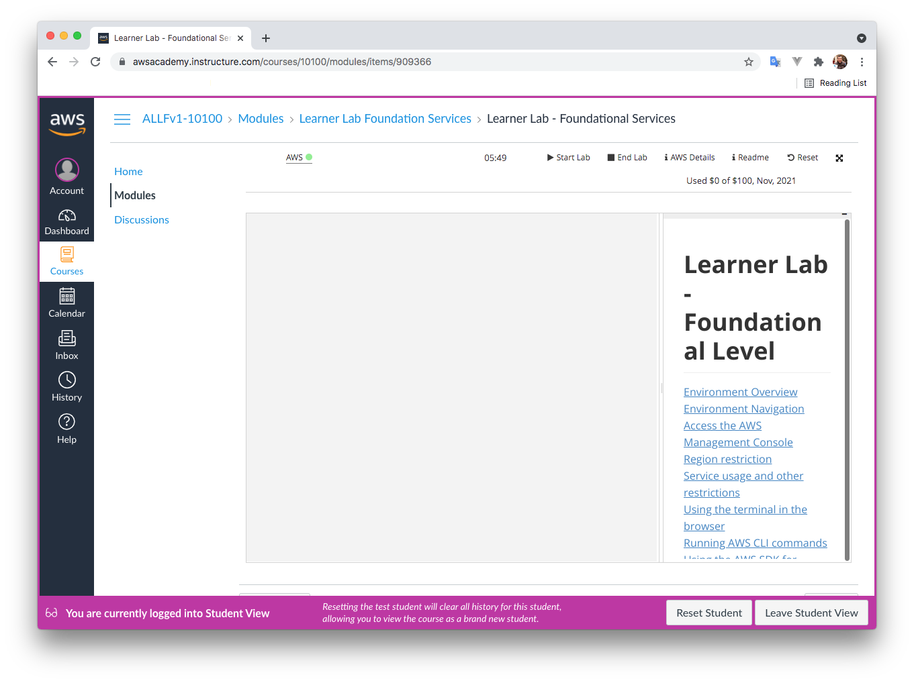
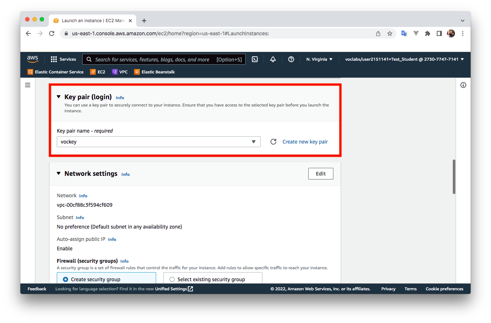

1 Amazon Web Services (AWS)
Amazon Web Services (AWS) és una col·lecció de serveis de computació en el núvol pública que, en conjunt, formen una plataforma de computació en el núvol, oferida per Amazon a través d'Internet.
1.1 Què és AWS Academy?
AWS Academy és un programa d'AWS que ofereix gratuïtament a les institucions d'educació superior un pla d'estudis de computació en el núvol, preparant els estudiants per obtenir certificacions reconegudes en la indústria.
Referències: Preguntes freqüents sobre AWS Academy.
1.2 Com accedisc a AWS Academy?
L'URL per accedir a AWS Academy és la següent:
https://www.awsacademy.com/LMS_Login
1.3 Què és AWS Academy Learner Lab?
AWS Academy Learner Lab és un laboratori que permet als estudiants treballar amb alguns dels serveis d'AWS durant un període de temps. Cada estudiant disposa d'un crèdit de 100 dòlars per utilitzar en serveis de la plataforma AWS.
1.4 Com puc utilitzar AWS Academy Learner Lab?
En aquesta guia trobaràs tots els passos necessaris per accedir i utilitzar la plataforma AWS Academy Learner Lab.
Guia de l'estudiant d'AWS Academy Learner Lab. (pdf)
1.5 Serveis d'Amazon Web Services (AWS)
A continuació es mostren alguns dels serveis d'AWS que utilitzarem durant el curs.
- Amazon EC2 (Elastic Compute Cloud): Servei web que proporciona capacitat de càlcul escalable en el núvol.
- Amazon S3 (Simple Storage Service): Servei d'emmagatzematge d'objectes.
- Amazon EBS (Elastic Block Store): Servei d'emmagatzematge de blocs.
- Amazon EFS (Elastic File System): Servei d'emmagatzematge de fitxers en xarxa, compatible amb NFS.
- Amazon RDS (Relational Database Service): Servei de bases de dades gestionat per AWS.
- Amazon VPC (Virtual Private Cloud): Servei per crear xarxes virtuals en AWS.
- AWS IAM (Identity and Access Management): Servei per administrar usuaris i permisos d'accés als recursos d'AWS.
- AWS KMS (Key Management Service): Servei per crear i administrar claus de xifratge.
- Amazon Lambda: Servei basat en esdeveniments per executar codi sense gestionar servidors.
- Amazon Elastic Beanstalk: Servei per desplegar i escalar aplicacions web sense servidors.
- Amazon ECS (Elastic Container Service): Servei d'orquestració de contenidors.
- Amazon EKS (Elastic Kubernetes Service): Servei per executar Kubernetes en AWS.
- AWS Fargate: Servei per executar contenidors sense gestionar servidors.
- Amazon Lightsail: Solució VPS senzilla per a desenvolupadors i petites empreses.
1.6 Com crear instàncies EC2?
En aquesta guia trobaràs els passos per crear instàncies EC2 en AWS.
Tutorial bàsic per crear instàncies EC2 en Amazon Web Services (AWS). (pdf)
1.6.1 Pas 1. Iniciem el laboratori
Des del curs d'AWS Academy iniciem el laboratori prement Start Lab i esperem que l'icona al costat del text d'AWS es torne verd.

1.6.2 Pas 2. Accedim a la consola de gestió d'AWS
Premem sobre el text d'AWS, i s'obrirà una nova pestanya amb la consola de gestió d'AWS.
Seleccionem el servei EC2.
1.6.3 Pas 3. Cerquem el botó "Launch Instance" per crear una instància EC2
La manera més ràpida de crear una instància EC2 és a través del botó Launch Instance que apareix en el tauler del servei EC2.
1.6.4 Pas 4. Assignem un nom a la instància EC2 que anem a crear
En aquest pas podem assignar-li un nom a la instància EC2 i afegir etiquetes amb metadades (parelles clau-valor). Les etiquetes permeten organitzar o filtrar les instàncies.
1.6.5 Pas 5. Seleccionem la AMI i l'arquitectura de la instància EC2
Seleccionem la AMI (Amazon Machine Image) i l'arquitectura (x86 o Arm).
En aquest exemple, seleccionem la imatge Ubuntu Server 22.04 LTS (HVM), SSD Volume Type, 64 bits (x86).
1.6.6 Pas 6. Seleccionem el tipus d'instància EC2
Seleccionem crear una instància de tipus t2.micro, amb 1 vCPU i 1 GiB de RAM.
1.6.7 Pas 7. Seleccionem la clau pública SSH que injectarem a la instància EC2
Seleccionem la clau pública SSH que injectarem a la instància. Podem generar un parell de claus SSH o utilitzar les claus associades al nostre compte en AWS Learner Lab.
En aquest exemple, utilitzem la clau pública vockey.

1.6.8 Pas 8. Configurem la xarxa i els grups de seguretat
Podem configurar la xarxa VPC i les regles del grup de seguretat. En aquest exemple, creem un nou grup de seguretat amb les següents regles:
- SSH. Protocol: TCP. Port: 22. Origen: 0.0.0.0/0
- HTTP. Protocol: TCP. Port: 80. Origen: 0.0.0.0/0
- HTTPS. Protocol: TCP. Port: 443. Origen: 0.0.0.0/0
1.6.9 Pas 9. Afegim l'emmagatzematge que utilitzarà la instància
Configurem l'emmagatzematge de la instància EC2. En aquest exemple, utilitzem un disc SSD de 8 GB per defecte.
1.6.10 Pas 10. Detalls avançats
En aquest pas podem configurar alguns detalls avançats de la instància. Per exemple, en el camp User data podem indicar comandos o un script que s'executarà quan es reinicie la instància. Aquesta opció permet preparar la instància perquè s'inicie automàticament amb l'estat desitjat.
1.6.11 Pas 11. Revisem la configuració seleccionada
En aquest pas podem revisar la configuració seleccionada i triar el nombre d'instàncies que volem crear.
Per crear la instància, feu clic sobre el botó Launch Instance.
1.6.12 Pas 12. Estat de la instància
En aquest pas apareixerà un missatge indicant que la instància s'està creant. Farem clic sobre l'identificador de la instància que apareix en el quadre verd.

1.6.13 Pas 13. Consultem l'estat de la instància des de la consola de gestió
Després de pocs segons, la instància que hem creat apareixerà a la consola. Quan la instància mostre l'estat Running, estarà llesta per connectar-nos.
1.7 Com connectar-nos a una instància EC2 per SSH des de Linux
1.7.1 Pas 1. Seleccionem la instància i fem clic sobre Connect
Quan la instància mostre l'estat Running, marcarem el checkbox que apareix al principi de la línia i després farem clic sobre Connect.

1.7.2 Pas 2. Obtenim el comando per connectar-nos des d'un client SSH en Linux
En aquest pas apareixerà com podem connectar-nos a la instància que acabem de crear.
Seleccionarem l'opció SSH client i llegirem els passos per connectar-nos a la instància. Podem copiar el comando que apareix en aquest pas, que conté el nom de l'arxiu .pem de la clau privada, el nom d'usuari i el DNS públic de la instància.
Exemple:
| Bash | |
|---|---|
1.7.3 Pas 3. Descarreguem la clau privada .PEM des del Learner Lab
Per descarregar la clau, fem clic sobre AWS Details, i apareixerà la possibilitat de descarregar la clau com un arxiu .PEM o .PPK.
En Linux utilitzarem la clau .PEM, i en Windows, si usem PuTTY, utilitzarem la clau .PPK. Quan descarregueu la clau, es descarregarà com labuser.pem o labuser.ppk.
1.7.4 Pas 4. Connectar-nos per SSH des de Linux
Quan descarregueu la clau privada labuser.pem, guardeu-la en un directori i, des d'allí, realitzeu els següents passos.
Renombrem l'arxiu labuser.pem com vockey.pem:
| Bash | |
|---|---|
IMPORTANT: canviem els permisos de l'arxiu perquè només el propietari tinga permisos de lectura:
| Bash | |
|---|---|
Executem el comando copiat en el pas 2 per connectar-nos per SSH a la instància EC2 des d'un terminal de Linux. El comando serà semblant a aquest, però amb un DNS públic diferent:
| Bash | |
|---|---|
Esta pàgina forma part del curs Implantació d'Aplicacions Web de José Juan Sánchez Hernández i el seu contingut es distribueix sota una llicència Creative Commons Reconeixement-NoComercial-CompartirIgual 4.0 Internacional